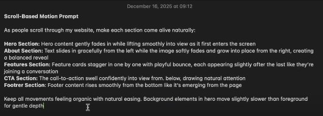
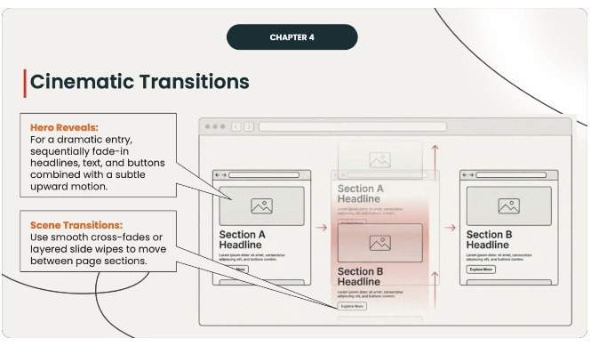
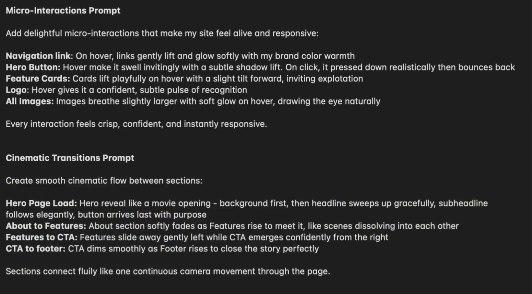
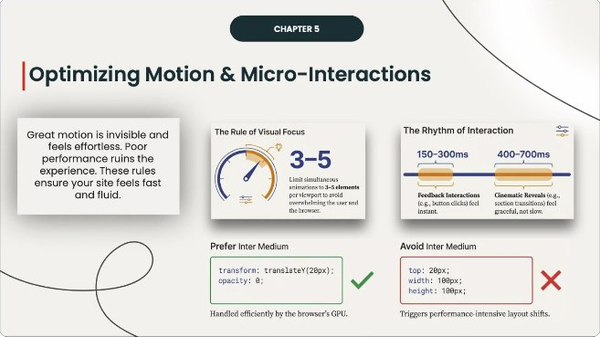
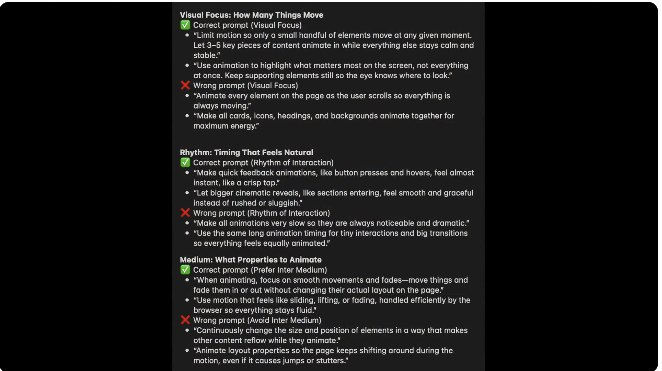
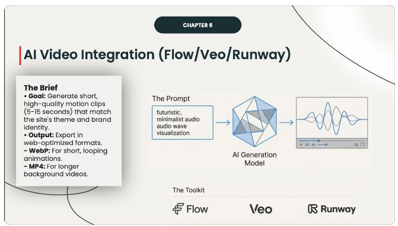

1
@keyframes
Definindo sequencias de animacao com estados from/to e porcentagens.

2
Transition
Transicoes suaves entre estados com duration, delay e timing-function.

3
Transform
Translate, rotate, scale e skew - transformacoes 2D e 3D performaticas.

4
Animation Properties
Duration, iteration-count, direction, fill-mode e play-state.

5
Exemplos Praticos
Fade-in, slide-up, pulse e spin - animacoes comuns em projetos reais.

6
Boas Praticas
GPU-friendly properties, will-change e prefers-reduced-motion.